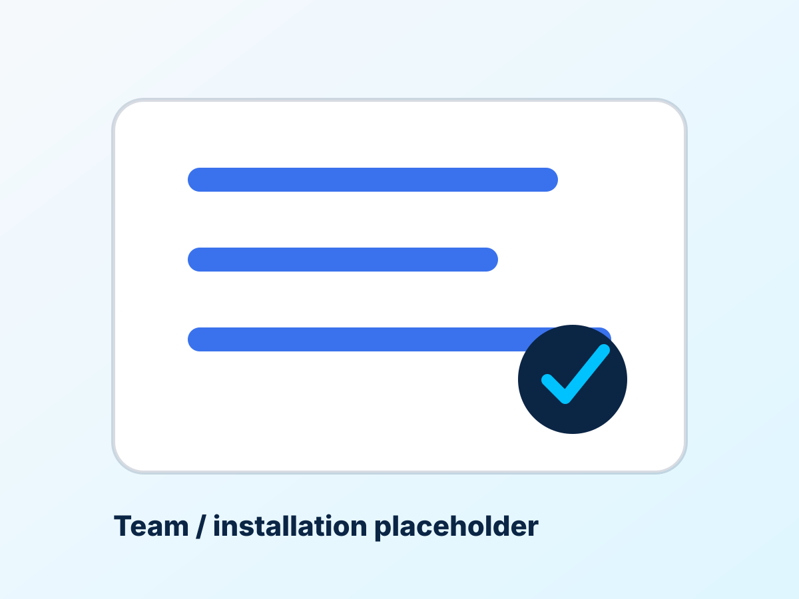
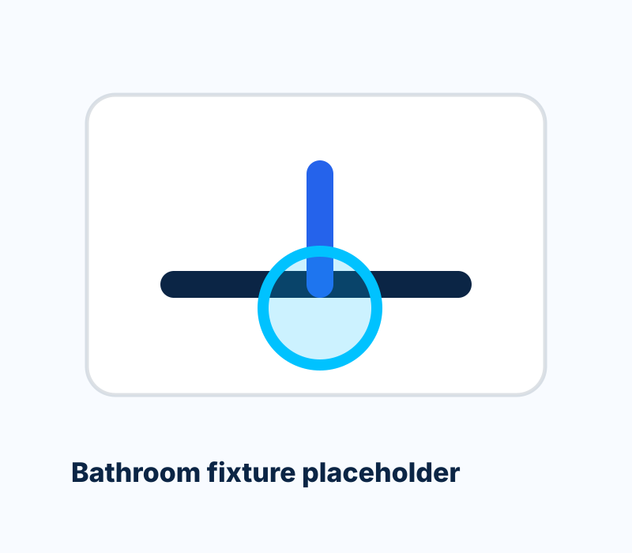

Proven Experience
Seven years solving practical plumbing problems across homes, rentals, offices and small businesses.
Wanjohi Plumbers delivers leak repairs, pipe installation, drainage solutions, bathroom plumbing, kitchen plumbing and water tank installation with professional workmanship and clear communication.
Hands-on plumbing experience serving homes and businesses.
Call direct for urgent leaks, blocked drains and installations.
Inspection, repair and quality check handled with care.
From the first call to the final check, the experience is built around clarity, speed and workmanship that protects your property.
Seven years solving practical plumbing problems across homes, rentals, offices and small businesses.
Urgent leaks, blocked drains and failed fixtures get direct attention without slow handoffs.
Repairs and installations are handled with a clean finish, proper checks and respect for your space.
Practical recommendations and fair estimates before work begins, so there are no awkward surprises.
Focused services for the issues that matter most: leaks, pressure, drainage, fixtures, tanks and ongoing maintenance.
Find and repair leaking taps, pipes, joints and fixtures before water damage spreads.
New pipe runs, replacements and upgrades for stronger flow and dependable supply.
Blocked sinks, slow drains and drainage issues cleared with practical, lasting fixes.
Showers, toilets, basins, mixers and bathroom upgrades installed and repaired neatly.
Sink connections, taps, traps and appliance water lines fitted for everyday reliability.
Tank placement, connection and maintenance for consistent water storage and supply.
Urgent help for bursts, active leaks and plumbing failures that need quick attention.
Routine checks and small repairs that keep your plumbing system performing properly.


Wanjohi Plumbers serves homes and businesses throughout Nakuru County with dependable repairs, installations and maintenance. The mission is simple: respond quickly, explain clearly, complete the work properly and leave every client confident in the result.
Whether the job is a leak repair in a family home, a drainage issue in a rental property or a water tank installation for a business, Wanjohi Plumbers provides countywide coverage across Nakuru.
The process is simple, efficient and built to help you make decisions quickly.
Explain the issue, location and urgency directly by phone or WhatsApp.
The problem is checked properly so the recommendation fits the real cause.
The agreed fix is completed neatly using a practical, durable approach.
The repair is tested before leaving, with care taken to keep the site clean.
Realistic examples of the kind of experience the site is designed to communicate: professional, prompt and trustworthy.
Our kitchen pipe was leaking badly. Wanjohi arrived quickly, explained the problem and fixed it cleanly. The pricing was fair.
The bathroom installation was done neatly and tested properly. I appreciated the clear communication before any work started.
We had a drainage issue at our rental property. The response was quick and the solution has held up well.
These common questions help visitors move from uncertainty to action faster.
Yes. Call directly for urgent leaks, burst pipes, blocked drains and other plumbing problems that need fast attention.
Wanjohi Plumbers serves the entire Nakuru County, including Nakuru Town, Naivasha, Gilgil, Molo, Njoro, Rongai, Bahati and surrounding areas.
Yes. Water tank installation, connection and maintenance are available for homes and businesses.
Yes. Services include taps, sinks, toilets, basins, showers, mixers, traps and appliance water line connections.
Call or WhatsApp with your location and the problem. For many jobs, an inspection helps confirm the right fix and accurate cost.
Yes. General plumbing maintenance is available to prevent small issues from becoming expensive emergencies.
Turn off the water supply if possible, move valuables away from the leak and call immediately for emergency plumbing help.
For leaks, drainage problems, installations and maintenance, call now and get direct help from a trusted local plumber.